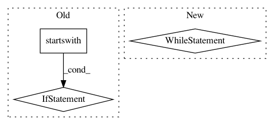

1fc1755e7e28e0be952d722edac74f5d26cd78c8,opennmt/models/sequence_tagger.py,,flag_bioes_tags,#Any#Any#Any#,177
Before Change
_add_false_negative()
index = _skip_chunk(gold[b], index)
in_chunk = False
elif gold_tag.startswith(b"E"):
_add_true_positive()
in_chunk = False
else:
After Change
// Second pass to detect false postives.
index = 0
while index < length:
pred_tag = predicted[b][index]
match, index = _match(predicted[b], gold[b], index, length)
if not match and pred_tag != b"O":
_add_false_positive()
index += 1
return np.array(gold_flags), np.array(predicted_flags)
In pattern: SUPERPATTERN
Frequency: 3
Non-data size: 3
Instances
Project Name: OpenNMT/OpenNMT-tf
Commit Name: 1fc1755e7e28e0be952d722edac74f5d26cd78c8
Time: 2017-10-25
Author: guillaume.klein@systrangroup.com
File Name: opennmt/models/sequence_tagger.py
Class Name:
Method Name: flag_bioes_tags
Project Name: tensorflow/transform
Commit Name: 4bf19837a0df0c7c8e7bd3f3c6a55ddd62e30c6b
Time: 2018-04-30
Author: tf-transform-dev@google.com
File Name: tensorflow_transform/saved/saved_transform_io.py
Class Name:
Method Name: _partially_apply_saved_transform_impl
Project Name: rwth-i6/returnn
Commit Name: 10ee888f8aa6ae6a2f7a94b61c8920e199b3f9ad
Time: 2020-08-21
Author: albert.zeyer@rwth-aachen.de
File Name: returnn/tf/layers/base.py
Class Name: LazyLayerResolver
Method Name: create_dummy_layer